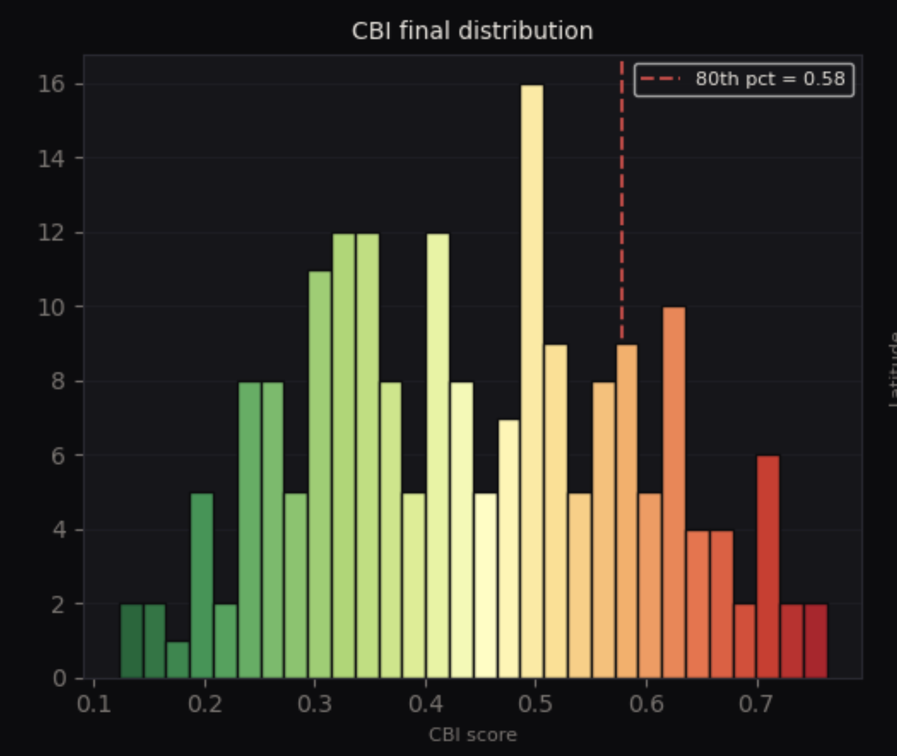
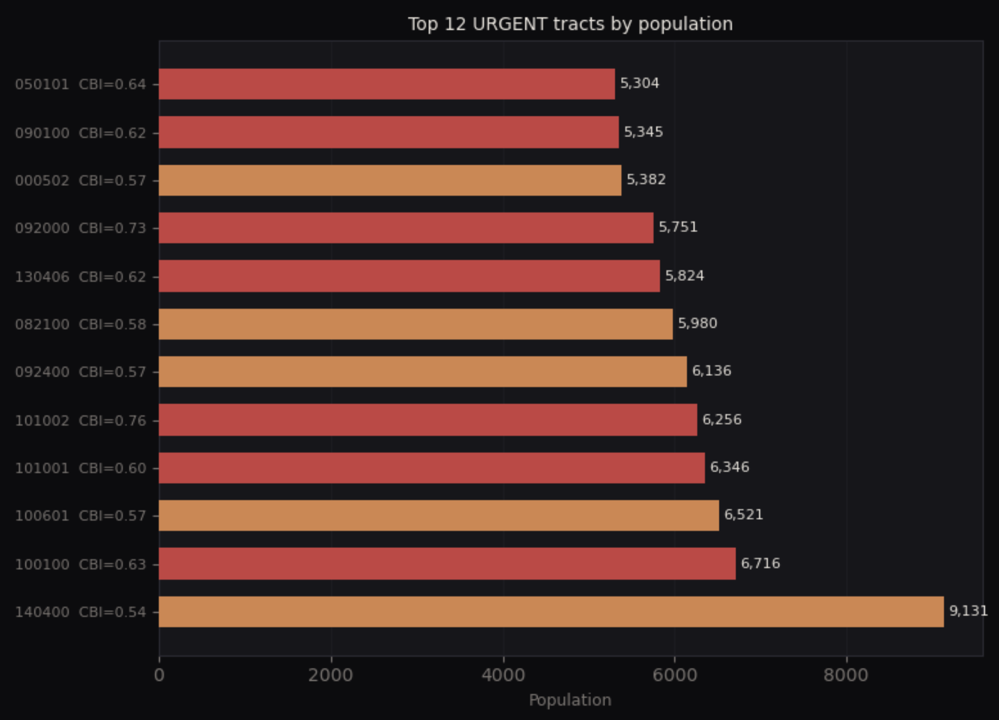

01
Urban Accessibility & Inequality Index
When Social Vulnerability Meets Physical Distance
Consider a household in Mattapan. The primary wage earner relies on public transit to reach work. A nearby grocery store closed several years ago. The nearest full-service healthcare facility requires two bus transfers. Daily routines involve travel time, uncertainty, and limited local options.
These constraints do not appear in income data alone. They are spatial.
This project examines whether socially vulnerable communities in Boston also face systematically poorer access to essential urban services. The analysis integrates the CDC Social Vulnerability Index (SVI) at census tract level, OpenStreetMap data for healthcare facilities, food retail, parks, and transit stops, and Boston census tract geometries.
Each tract is represented by its centroid. Straight-line distance to the nearest service location is calculated for each service category. Distances are normalised to risk scores and combined into a composite Urban Accessibility Index. This accessibility score is then combined with SVI to construct the Urban Accessibility & Inequality Index.
Findings
The SVI map reveals a clear spatial pattern. Higher vulnerability clusters in southern Boston, particularly in Dorchester, Roxbury, Mattapan, and parts of Hyde Park. These tracts form a contiguous corridor of socioeconomic vulnerability, visible as a deep-red band running through the city's southern half.

Fig 1.1 — Social Vulnerability Index by census tract. The darkest quintile (SVI 0.87–1.00) forms a nearly continuous corridor through Roxbury, Dorchester, and Mattapan, while Back Bay, Beacon Hill, and the waterfront remain in the lightest category.
The multi-service accessibility map shows a different pattern. Access varies across the city and is service-specific. Healthcare and food retail display the strongest spatial disparities. Notably, some lower-vulnerability tracts in the periphery show weaker access (appearing in yellow), while certain high-vulnerability areas closer to the urban core maintain moderate access due to proximity to transit and commercial corridors.

Fig 1.2 — Urban Accessibility Index (multi-service composite). Central and downtown tracts (dark purple) enjoy the strongest access. Southern and peripheral tracts, especially in Mattapan, Hyde Park, and West Roxbury, show the highest access deficits (yellow, scores 0.30–0.69).
The composite Urban Accessibility & Inequality Index isolates the most critical zones — areas where vulnerability and access disadvantage coincide. The highest index scores concentrate in Roxbury, Dorchester, and Mattapan. These are areas where both dimensions are simultaneously elevated, creating a compounded spatial penalty for residents.
The analysis demonstrates that poor access alone does not define priority. The most policy-relevant areas are those where social vulnerability amplifies the impact of distance.

Fig 1.3 — Urban Accessibility & Inequality Index (combined). The darkest tracts (0.55–0.74) reveal the overlap zone — communities that are both socially vulnerable and far from essential services. This corridor runs from Roxbury south through Dorchester and Mattapan with extensions into East Boston and parts of Brighton.
Policy Implications
Healthcare and food access should be prioritised in high-SVI southern tracts. Incentives for community clinics, mobile health units, and fresh food retail development should target these zones.
Service siting decisions should integrate vulnerability weighting. Planning processes often optimise for geographic coverage. Incorporating vulnerability metrics would better align investment with need.
Transit-accessible service hubs should be developed in high-compound areas. Co-locating health, food, and public services within reliable transit corridors would reduce daily burden. Accessibility planning must be equity-weighted rather than spatially neutral.
02
Bus Service Failure Risk
Structural Fragility in the MBTA Bus Network
A late evening bus along Columbia Road arrives twenty minutes behind schedule. Riders miss connections and wait in low-lit conditions. For shift workers, reliability determines job security.
Transit access is insufficient if reliability is unstable.
This project examines where and when bus service failure risk concentrates and identifies structural drivers of that risk. The analysis uses 14.9 million MBTA bus event records from 2024, GTFS stop locations, scheduled headway data, weather indicators, and derived spatial indicators including distance to CBD, stop density, and intersection density.
The final modelling dataset includes 17 features with a binary service failure target. Three modelling approaches were applied: logistic regression (baseline), gradient boosting, and LightGBM (final model).
~6%
Baseline failure rate
Temporal Concentration
The month-by-hour heatmap reveals strong time-of-day effects. Hour 1 (1 AM) consistently exhibits the highest predicted failure probability, reaching 0.35–0.38 during winter months. Evening hours between 19:00 and 22:00 display sustained elevated risk across several months. Early morning hours (3–6 AM) show comparatively lower risk, while the afternoon-to-evening build-up is visible as a broad red band from roughly hour 13 through hour 22. These patterns remain robust after accounting for observation counts.

Fig 2.1 — Predicted service failure risk by month and hour. The 1 AM spike likely reflects end-of-service scheduling fragility. The sustained afternoon-to-evening band (hours 13–22) captures congestion-related delays across all months, intensifying in winter (months 1–3) and autumn (months 10–12).
Spatial Clustering
Stop-level mean predicted probabilities across the Greater Boston network show a gradient from low-risk (dark purple) to high-risk (yellow). Most stops cluster in the moderate range, but a clear set of outliers appears in the Longwood–Brookline–southern Boston corridor.

Fig 2.2 — All MBTA bus stops coloured by mean predicted failure probability. The yellow-green high-risk cluster is concentrated in central-south Boston, while most peripheral and suburban stops show lower risk (dark purple/teal).
Filtering to the 35 high-risk stops (mean risk ≥ 0.30) — of which 21 lie within Boston city boundaries — reveals clear corridor-level fragility rather than isolated anomalies. These stops cluster along Columbia Road, Albany Street, Washington Street, Longwood Avenue, and Western Avenue, with an additional cluster near Revere in the north.

Fig 2.3 — High-risk bus stops (mean risk ≥ 0.30). The tight clustering in the Longwood–Brookline–Roxbury corridor and the Washington Street axis south toward Mattapan highlights corridor-level fragility. A secondary cluster appears near Revere.
Structural Drivers
SHAP analysis highlights the strongest contributors to predicted risk. The beeswarm plot shows that distance to CBD and hour of day have the widest spread of SHAP values, indicating they are the most influential features. Scheduled headway shows a clear directional pattern: longer headways (red/high feature values) consistently push predictions toward failure. Intersection count within 500m shows that high-complexity environments elevate risk. Weather variables like temperature and precipitation show comparatively modest and clustered SHAP impacts.

Fig 2.4 — SHAP beeswarm plot. Each dot represents a single prediction. Red (high feature value) dots pushed rightward indicate that higher values of that feature increase failure risk. The clear red-right pattern for scheduled_headway_min confirms: longer headways systematically increase failure probability.
The waterfall plot for a single high-risk observation makes the decomposition concrete. A stop with a 13.5-minute headway at 2,289m from CBD receives a cumulative SHAP push of +3.46 above the base log-odds, resulting in a predicted failure probability of 0.509. Scheduled headway alone contributes +1.34 — the single largest driver.

Fig 2.5 — SHAP waterfall for a single high-risk stop-event. The cumulative rightward push from operational and spatial features drives the final prediction to f(x) = 0.509. This decomposition shows that reliability risk is not random — it accumulates from operational design and urban form.
Policy Implications
Headway redesign on high-risk corridors. Reducing scheduled headways in identified fragile corridors can materially lower failure probability.
Corridor-based reliability interventions. Bus lanes, signal priority, and stop consolidation should be prioritised along Columbia Road, Washington Street, and other clustered high-risk corridors.
Evening and late-night service stabilisation. Reliability resources should be concentrated during 19:00–22:00 and early overnight periods.
Complexity-aware scheduling. Routes with high intersection density should incorporate buffer adjustments. Transit reliability should be treated as an equity issue, particularly where high-risk corridors overlap with high vulnerability.
03
Boston Commercial Viability Index
Identifying Underserved Markets
In Mission Hill, several transit stops operate within a small radius, and residential density is stable. However, local commercial offerings remain sparse. Residents travel to adjacent neighbourhoods for basic retail needs.
Market outcomes do not always reflect underlying demand.
This project constructs a tract-level Commercial Viability Index (CVI) and a Market Gap Score to identify areas where commercial supply does not match demand fundamentals. Data sources include 2020 census tract boundaries, ACS 5-year demographic estimates, MBTA GTFS transit stops, and OpenStreetMap commercial POIs.
The CVI combines three pillars: Transit Access (35%), Demographic Catchment (35%), and POI Density (30%, inverted-U scoring). The inverted-U approach recognises that very low and very high commercial density both reduce viability — too few businesses signals market failure, while oversaturation increases competition and lowers marginal returns.
The Market Gap Score calculates demand (Transit + Demographics) minus supply (POI density).
Data Layers
Before constructing the index, it is helpful to see all the underlying spatial layers together. The map below shows transit stops (bus, subway, light rail) and commercial POIs overlaid on Boston's tract boundaries. The concentration of POIs in the downtown core and along major transit spines is immediately visible, as is the sparsity in southern and western tracts.

Fig 3.1 — All layers: POIs, bus, subway, and light rail stops. The visual confirms the spatial decoupling central to this analysis — transit infrastructure extends into residential neighbourhoods, but commercial POIs do not follow at the same density.
The Three Pillars
Each CVI pillar captures a distinct demand or supply dimension. Transit access clusters along the Orange and Green Line corridors, with strong scores also appearing in East Boston and parts of Brighton that benefit from bus network density. Demographic catchment is broadly distributed, with notable strength in the outer residential neighbourhoods — precisely the areas with thinner commercial presence. POI density (scored as an inverted U) peaks in middle-density tracts; the lowest scores appear both in the commercial desert of the far south and in the oversaturated downtown core.

Fig 3.2a — Pillar 1: Transit Access

Fig 3.2b — Pillar 2: Demographic Catchment

Fig 3.2c — Pillar 3: POI Density (Inverted-U)
Composite CVI
The composite Commercial Viability Index brings the three pillars together. The highest CVI scores (darkest shading) appear along the main transit spines and in tracts with balanced transit, demographics, and moderate commercial density. Several labelled tracts score above 84, indicating strong commercial fundamentals. The southern residential belt, despite strong demographic scores, is held back by weak transit access and thin POI counts.

Fig 3.3 — Composite CVI (0–100). Labelled tracts include scores of 96 (near Sullivan Square), 94 (near Jackson Square), and 100 (near Mattapan, benefiting from the Mattapan Trolley and bus network). The wide score range (0–100) reflects genuine structural variation in commercial potential across the city.
Market Gap
The Market Gap analysis identifies tracts where demand exceeds supply. In the map below, red/warm tones indicate underserved markets (positive gap — demand outpaces supply), while blue/cool tones indicate oversaturated markets (negative gap — supply exceeds residential demand). The most underserved areas include Mission Hill, Mattapan, parts of Dorchester, Brighton, and Jamaica Plain — tracts that combine transit presence and residential base with limited commercial activity.
Oversaturated tracts include Chinatown, Allston, and the North End. Residential-only demand metrics partially explain this classification, as daytime population from commuters, students, and tourists is not captured in census data.
The key insight is that transit access and commercial density are spatially decoupled. Where transit goes, retail does not automatically follow.

Fig 3.4 — Market Gap Score. The red-to-blue diverging colour scale makes the mismatch visible. Several southern tracts show gaps exceeding +40, meaning demand fundamentals are far ahead of current commercial supply. The deepest blue tracts (-80 to -100) in the core reflect oversaturation relative to residential population.
Policy Implications
Targeted commercial incentives in underserved tracts. Zoning flexibility, small business grants, and streamlined permitting should prioritise high positive gap areas.
Transit-oriented commercial activation. Areas with strong transit but thin retail presence should receive coordinated development support.
Data-informed site selection tools. The CVI can support strategic retail lending and municipal investment decisions. Commercial planning should align with transit and demographic fundamentals rather than rely solely on historical investment patterns.
04
Compounding Burden Index
Where Systems Converge
A family in Dorchester faces high social vulnerability, limited nearby services, unreliable bus corridors, and thin local commercial infrastructure. Each constraint increases exposure to risk. None is sufficient alone to define the problem. Together, they define a lived experience of compounding disadvantage.
This final project integrates three dimensions — social vulnerability, transit poverty and reliability risk, and commercial market gap — into a single Compounding Burden Index (CBI) that quantifies where these pressures overlap.
Component Distributions
Before compositing, each dimension shows a distinct distribution. SVI (D1) is roughly bimodal, with clusters of tracts at both low and high vulnerability. Transit poverty (D2) is heavily left-skewed — most tracts have low transit burden, but a tail extends into high values. Commercial gap (D3) distributes more evenly across the spectrum. The variation in these shapes means the CBI is not simply an average; it captures the intersection of structurally different patterns.

Fig 4.1 — Component distributions (0 = least burden, 1 = most). The different shapes confirm that each dimension captures a distinct structural pattern, making their intersection analytically meaningful.
CBI Distribution
The final CBI distribution is approximately normal with a slight right skew. Most tracts cluster between 0.25 and 0.55, but a meaningful tail extends past the 80th percentile threshold at 0.58. The tracts in this tail — roughly 20% of all tracts — experience simultaneous burden across multiple dimensions.

Fig 4.2 — CBI score distribution across all Boston census tracts. The red dashed line marks the 80th percentile (0.58), delineating the high-burden subset. The colour gradient from green (low burden) to red (high burden) reinforces the skewness — most of the city sits below the threshold, but the tail is substantive.
Spatial Pattern
Mapping CBI by tract centroid (with bubble size proportional to population) reveals the geographic coherence of compounding burden. The warmest tones (orange-red, highest CBI) concentrate in southern Boston — particularly in the latitude band between roughly 42.27° and 42.31°N — corresponding to Dorchester, Mattapan, and Roxbury. Many of the highest-burden tracts are also among the most populous, amplifying the number of residents affected.

Fig 4.3 — CBI by tract centroid (bubble = population). The spatial concentration is striking: the highest-burden tracts are not scattered randomly but form a geographically coherent zone in the city's south.
Policy Triage
A triage matrix categorises tracts by burden level (CBI score) and population size (log scale). Four quadrants emerge: Urgent (high burden, high population — red), Targeted (high burden, moderate population — orange), Monitor (lower burden, high population — blue), and Baseline (lower burden, lower population — grey). The most urgent tracts represent thousands of residents affected simultaneously by vulnerability, limited access, unreliable transit, and market underinvestment.

Fig 4.4 — Policy triage matrix. The upper-right quadrant (URGENT) contains the tracts with both the highest burden scores and the largest populations — these are the highest-priority zones for integrated intervention. The TARGETED quadrant captures smaller but equally burdened communities that should not be overlooked.
The top 12 URGENT tracts by population are shown below, with neighbourhood identifications based on the BPDA's census-tract-to-neighbourhood crosswalk. The largest — tract 140400 (Roslindale) with a population of 9,131 and CBI of 0.54 — illustrates the scale of compounding burden. Tract 101002 (Dorchester) carries the highest CBI in this set at 0.76. The full roster spans some of Boston's most historically underinvested communities:
Top 12 Urgent Tracts — Neighbourhood Identification
| Tract FIPS |
Neighbourhood |
Population |
CBI |
| 140400 | Roslindale | 9,131 | 0.54 |
| 100100 | Dorchester | 6,716 | 0.63 |
| 100601 | Dorchester | 6,521 | 0.57 |
| 101001 | Dorchester | 6,346 | 0.60 |
| 101002 | Dorchester | 6,256 | 0.76 |
| 092400 | Dorchester | 6,136 | 0.57 |
| 082100 | Dorchester | 5,980 | 0.58 |
| 130406 | Mattapan | 5,824 | 0.62 |
| 092000 | Dorchester | 5,751 | 0.73 |
| 000502 | Back Bay / Beacon Hill | 5,382 | 0.57 |
| 090100 | Roxbury | 5,345 | 0.62 |
| 050101 | Jamaica Plain | 5,304 | 0.64 |
Neighbourhood assignments based on BPDA 2010/2020 census-tract-to-neighbourhood crosswalk. Six of twelve urgent tracts fall in Dorchester, reinforcing its status as the epicentre of compounding burden. Mattapan, Roxbury, Roslindale, Jamaica Plain, and Back Bay/Beacon Hill each contribute one tract to the urgent set.

Fig 4.5 — Top 12 URGENT tracts ranked by population. Red bars indicate tracts classified as URGENT; orange bars as TARGETED (borderline). Tract 101002 has the highest CBI (0.76) in this set, while 140400 has the largest affected population.
Policy Implications
Corridor-based integrated investment. High-CBI zones should receive coordinated interventions spanning transit reliability, healthcare access, and commercial activation.
Equity-focused capital allocation. Infrastructure funding decisions should incorporate CBI ranking.
Cross-agency planning alignment. Transportation, economic development, and public health agencies should coordinate interventions within the same high-burden tracts.
Performance monitoring. Annual recalculation of CBI would allow progress tracking and adaptive resource deployment.
R
Reproducibility & Resources
Open Data, Open Methods
All analyses in this portfolio are designed to be reproducible. The datasets draw from publicly available sources, and the code, notebooks, and detailed methodological documentation are available on GitHub.
Data Sources
CDC Social Vulnerability Index (SVI) — Census tract-level composite vulnerability scores from the Agency for Toxic Substances and Disease Registry (ATSDR), U.S. Department of Health and Human Services.
MBTA GTFS & Bus Event Records — General Transit Feed Specification static data (stop locations, scheduled headways) and real-time event records from the Massachusetts Bay Transportation Authority open data portal.
OpenStreetMap (OSM) — Point-of-interest data for healthcare facilities, food retail, parks, and commercial establishments, extracted via the Overpass API.
American Community Survey (ACS) — 5-year demographic estimates at the census tract level from the U.S. Census Bureau.
Boston Census Tract Geometries — 2020 TIGER/Line shapefiles and BPDA neighbourhood-to-tract crosswalk for spatial delineation.
Code & Workflows
The complete codebase — including data ingestion, spatial processing, model training, SHAP analysis, index construction, and all visualisations — is available at:
Each project folder contains a detailed workflow document with step-by-step methodology, parameter choices, and limitations. Researchers and practitioners are encouraged to adapt the frameworks for other metropolitan areas.
Tools & Libraries
Python (pandas, geopandas, scikit-learn, LightGBM, SHAP), OpenStreetMap via Overpass API, GTFS parsing utilities, and matplotlib/contextily for cartographic output. Spatial operations use projected coordinate reference systems (Massachusetts State Plane) to ensure accurate distance calculations.